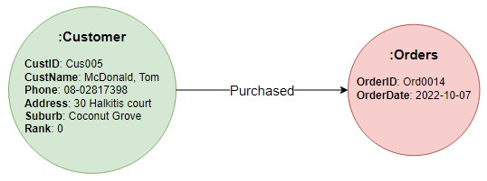
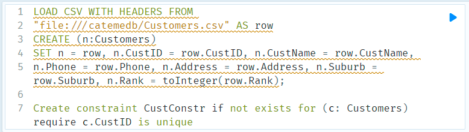
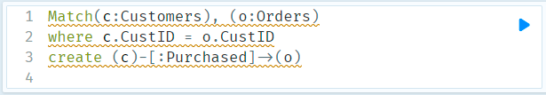

Customer Analytics using NoSQL database
1. Business Scenario:
This project is a continuation of a case study of Cater Me café. As the business recently grows, there is a need to consider migrating its current relational database to a NoSQL database management platform that can provide better scalability for a big data environment. Specifically, graph database is chosen because of its flexibility and reliability for real-time sales data.
2. Graph database modelling:
The existing ER diagram will be converted into graph structure following the rules below. Full guidance on transforming a relational database to graph data model can be found in Neo4j website
- Each entity table in relational model becomes node labels.
- Each row or record of a table becomes a node in the graph.
- Each column or field in a table becomes node properties.
- Join tables (or associative entities) in relational model become relationships (arrow).
Example of transforming a record of table Customers and Orders
{kind=link}
This image above illustrate the case of customer whose name is "McDonald Tom" with his order with ID "Ord0014". The arrow named "Purchased" represents the relationship between table Customers and Orders.
Example of transforming all records related Customer "McDonald" and Order "Ord0014"
3. Graph database implementation
Given the translated graph model above, Cypher Query Language is used to fully migrate the relational database into new Neo4j database. The relational database in this project is exported from the DBMS system Sqlite into csv files.Example of Cypher script to import table Customers
{kind=link}
Example of Cypher script to map Customers and Orders
{kind=link}
Example of full implementation of the Graph database

4. Neo4j Graph Data Science Library (GDSL)
The Neo4j GDSL support a wide ranges of data analytics, machine learning, graph algorithms etc. to improve prediction and discover insights.
In this project, the restaurant owner